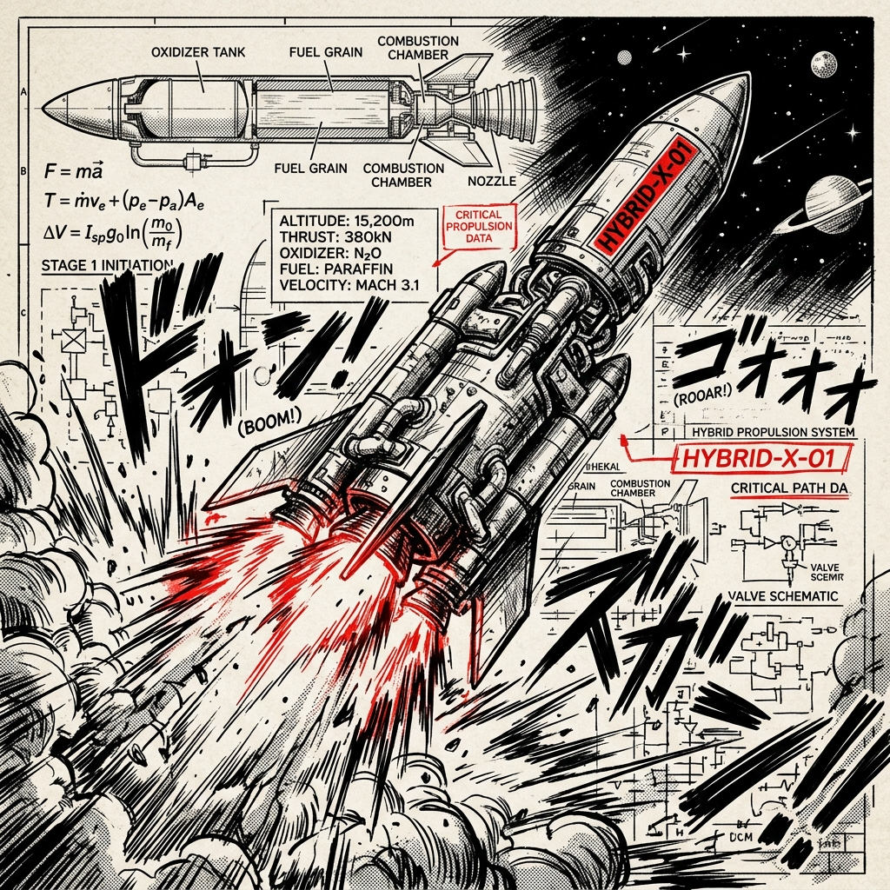
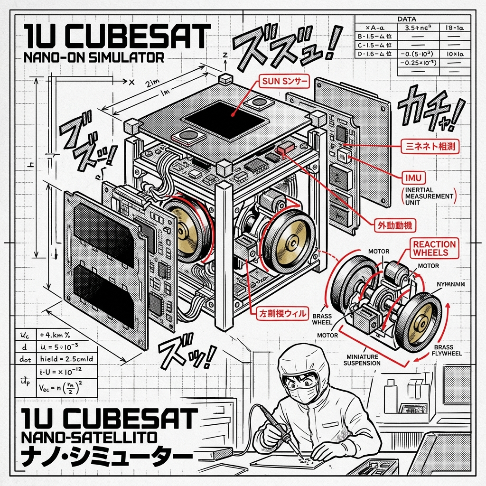

THE PORTFOLIO
A warrior's soul is reflected in their blade. Here is my operational record—proof of GNC and propulsion capability validated by aerospace agencies and academic clubs.

TADORI-TADORI HYBRID ROCKETS
Reconstructed flight control logs and structural layout simulation for Kyushu University's Planet Q Rocketry club. Analyzed dynamic atmospheric stabilization, nozzle expansion ratios, and hybrid combustion telemetry under extreme conditions.

SART CUBESAT ATTITUDE SIMULATOR
Hardware-in-the-loop and software simulation of a 3-axis Cubesat ADCS (Attitude Determination and Control System). Modeled orbital magnetic fields, gravity gradient torques, and reaction wheel detumbling.
UNDERACTUATED DEBRIS STABILIZATION
Selected speaker presentation at ESTEC (European Space Research and Technology Centre) for ESA Clean Space Days. Developed a highly customized adaptive control law to stabilize a multi-body spacecraft stack post-capture when half the actuator thrusters are disabled or degraded.